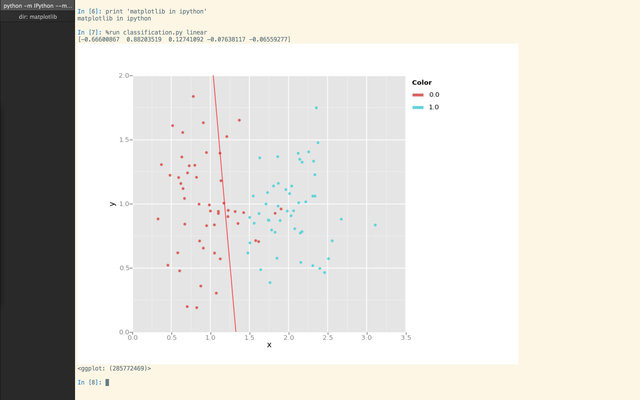
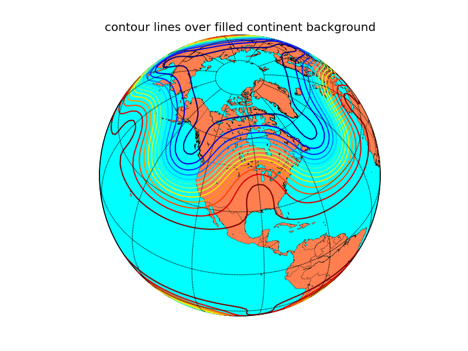

Several external packages that extend or build on Matplotlib functionality exist. Below we list a number of these. Please submit an issue or pull request on Github if you have created a package that you would like to have included. We are also happy to host third party packages within the Matplotlib Github Organization.
MplDataCursor is a toolkit written by Joe Kington to provide interactive “data cursors” (clickable annotation boxes) for matplotlib.
mpl_toolkits.natgrid is an interface to natgrid C library for gridding irregularly spaced data. This requires a separate installation of the natgrid toolkit.
Matplotlib-Venn provides a set of functions for plotting 2- and 3-set area-weighted (or unweighted) Venn diagrams.
mplstereonet provides stereonets for plotting and analyzing orientation data in Matplotlib.
Several projects have started to provide a higher-level interface to matplotlib. These are independent projects.
seaborn is a high level interface for drawing statistical graphics with matplotlib. It aims to make visualization a central part of exploring and understanding complex datasets.
prettyplotlib is an extension to matplotlib which changes many of the defaults to make plots some consider more attractive.
matplotlib_iterm2 is an external matplotlib backend uses iTerm2 nightly build inline image display feature.
Plots data on map projections, with continental and political boundaries, see basemap docs.
An alternative mapping library written for matplotlib v1.2 and beyond.
Cartopy builds on top of
matplotlib to provide object oriented map projection definitions and close
integration with Shapely for powerful yet easy-to-use vector data processing
tools. An example plot from the
Cartopy gallery:
{kind=link}
{kind=link}